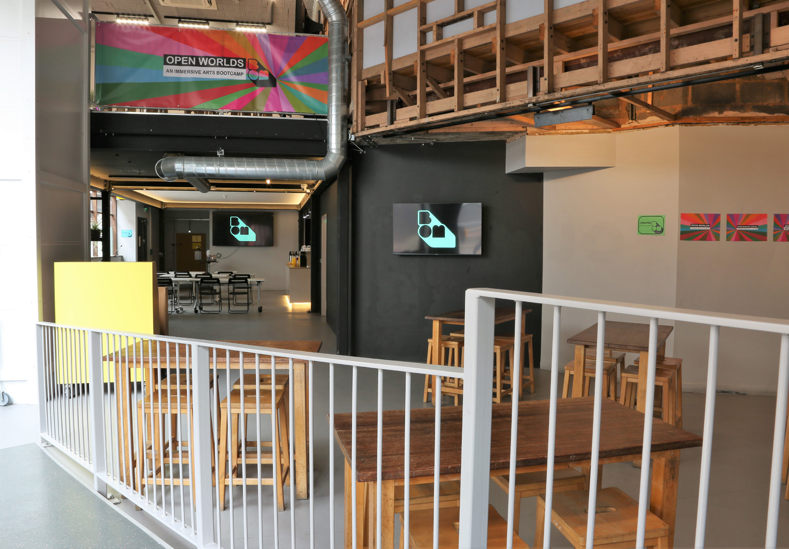

Work Experience
This section covers all relevant game development work experience I've had so far.
Freelance Game Developer - Current
Working on a freelance game project. Current Job. Progress update soon to come!
Freelance Video Editing - 2025
Freelance work creating recorded tutorials for university students.
Summer Freelance Job - VR Project (2024)
.png)
This summer, I took on my first freelance project where I was hired to set up and adapt a university VR project to meet the client's new goals and visions. I was responsible for understanding the existing codebase, restructuring systems, and implementing new features to align with their evolving requirements. This project was the beginning of my freelance journey and later evolved into my final year university project.
Birmingham Open Media - 2023



I worked on VFX, VR projects, AR projects, Unity courseware projects, and team bootcamps. It was a chance to combine technical and creative work in a professional environment.
Heartbond VR Project
This was a very interesting and unique project, I worked with my first client to create a VR anxiety relaxation game where there would be a murmuration VFX display that would react and change based on your heart rate and heart activities. I worked with someone from the company HeartMath who provided the Inner Balance Coherence Plus to provide reading I could take and use for the VFX. Unfortunately this project folded quite early on, but I was able to use some of the cool take and help bring the early stages of this idea to life.
Baths Workshop Event - 3D Scanning and Printing
This event took place inside a swimming pool! An abandoned swimming baths turned creative space. We explored the world of 3D scanning and printing. I helped the BOM CTO present this technology to students!
VFX Showcase
I worked on VFX within Unity. It was my main focus while on this placement. I was given access to lots of learning material to go through and learn all aspects on VFX. It was a massive step up from the basic Unity particle system, it really opened my eyes to the possibilities of in game effects.
Unity Courseware Work
I worked through some Unity Associate courseware in order to take the test and earn the qualification. Although I completed and studied for the exam, my time at the placement came to an end and I could not get the funding to take the exam. However, this really helped me learn some valuable things.
Unreal Engine BootCamps
At these bootcamps I got to help teach others Unreal Engine 5, and Blender to create 3D environments or games to then show to industry people at a locally hosted event. I got to attend these events, meet great people and see people grow on their journey!